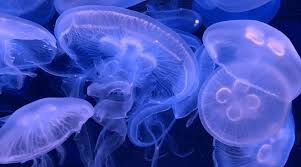

Jellyfish are over 600 million years old.there are over 3,000 species of jellyfish that have been identified, they can be grouped into several main categories based on their physical characteristics and behaviour.

By unknown from PetJellyfishUS
Jellyfish knowledge
Jellyfishes are made out of Lacking brains, blood, or even hearts, jellyfish are pretty simple critters. They are composed of three layers: an outer layer, called the epidermis; a middle layer made of a thick, elastic, jelly-like substance called mesoglea; and an inner layer, called the gastrodermis.Jellyfishes on't feel pain in the same way humans do. A jellyfish fountain of youth! Yet, other species aren't so lucky. Most jellyfish only live for about a year, with some only living for a couple of days. Jellyfishes are mostly made of water